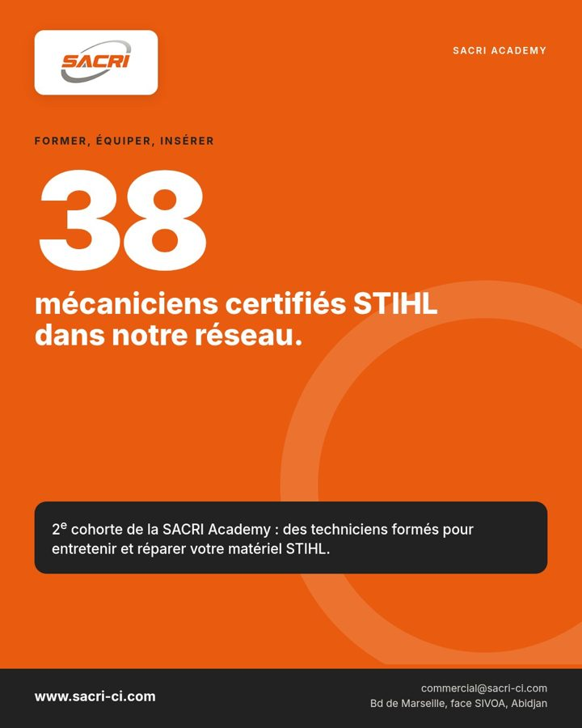

SACRI parle à près de 30 000 abonnés sur Facebook et 849 sur LinkedIn. Les vidéos de terrain font jusqu'à 3 400 vues ; les gros plans produit plafonnent sous 900. Il manque Instagram, WhatsApp et une raison de passer à l'acte.
Chaque chiffre vient de la page publique du compte, consultée sans connexion. Ce qui n'était pas visible est marqué comme tel.
| Réseau | Abonnés | Rythme | Formats | Engagement |
|---|---|---|---|---|
| Facebook facebook.com/sacriofficiel | 29 634 abonnés (16/11/2026) ; 29 K affichés le 19/11/2026 | 10 Reels du 27/07 au 19/11/2026, soit 2 à 3 par mois | Reels courts : produit en gros plan, terrain, événements | 87 à 3 800 vues par Reel ; 9 à 135 réactions ; 0 avis client |
| LinkedIn SACRI CÔTE D'IVOIRE | 849 abonnés (fiche publique, 19/11/2026) | 1 à 3 publications par semaine | Photos produit, vœux, partenariats, vie de l'entreprise | 2 à 8 réactions par fiche produit ; 29 pour la distinction (29/10) |
| Instagram aucun compte au nom de SACRI | aucun compte trouvé | - | - | - |
| TikTok aucun compte au nom de SACRI | aucun compte trouvé | - | - | - |
| YouTube aucune chaîne au nom de SACRI | aucune chaîne trouvée | - | - | - |
| WhatsApp Business aucun numéro affiché | aucun bouton sur la page Facebook ni sur le site | - | - | - |
Sources : facebook.com/sacriofficiel (en-tête et onglet Reels, 16 et 19/11/2026) ; linkedin.com/company/sacri-côte-d-ivoire (fiche publique, 19/11/2026, et publications relevées le 16/11/2026). Instagram, TikTok, YouTube : recherche du nom SACRI et de ses variantes les 16 et 19/11/2026, aucun compte trouvé.
Les quatre premiers montrent des gens ou un usage réel. Les gros plans produit et l'affiche chargée de texte sont en bas du classement.
Source : facebook.com/sacriofficiel/reels, vues affichées sous chaque vignette et réactions lues sur chaque Reel, 19/11/2026. « Non affiché » : Facebook ne montre pas ce compteur sans connexion.
SACRI est au niveau des distributeurs STIHL les plus suivis en Afrique sur Facebook, mais loin derrière CAMCI sur LinkedIn et derrière Bernabé pour la preuve sociale (avis clients).
| Compte | Réseau | Abonnés | Activité récente | Ce qu'ils publient |
|---|---|---|---|---|
| STIHL East Africa Distributeur STIHL, Kenya | 34 K abonnés (19/11/2026), page certifiée | 10 derniers Reels : 838 à 3 700 vues | Personnes en action, conseils (« What's this? »), visuels aux couleurs des 100 ans de STIHL | |
| STIHL OMIS import Distributeur STIHL, Maroc | 2,3 K abonnés (19/11/2026) | Dernière publication le 28/10/2026 | Conseils jardin et produit, rythme irrégulier | |
| CAMCI Distributeur STIHL, Cameroun | 6 172 abonnés (fiche publique, 19/11/2026) | 4 publications du 29/10 au 13/11/2026, 6 à 11 réactions | Campagne « Faux ou original » contre la contrefaçon, formations, visites d'agences | |
| Bernabé Côte d'Ivoire Quincaillerie professionnelle, Abidjan | 41 K abonnés (19/11/2026) | Publication le 18/11/2026 | Jeux concours, 84 % de recommandations sur 35 avis | |
| Farhat Frères Distributeur moto et motoculture, Abidjan | 3,6 K abonnés (19/11/2026) | Publication le 17/11/2026 | Vie de l'équipe, engagements (course solidaire) | |
| Makita France Marque d'outillage | 21 K abonnés (19/11/2026) | Vidéo du 12/11/2026, 15 réactions | Vidéos produit courtes, nouveautés et promotions | |
| Husqvarna Marque concurrente, site Côte d'Ivoire husqvarna.com/ci | 64 K abonnés (page du groupe, chiffre de moteur de recherche, non daté) | non relevé : page fermée sans connexion | Image de groupe, pas de page locale trouvée pour la Côte d'Ivoire | |
| Bosch Professional Marque concurrente, revendeur Rimco à Abidjan | Pas de page Côte d'Ivoire trouvée ; Bosch DIY Southern Africa : 24 248 abonnés (moteur de recherche, non daté) | non relevé | La marque communique par régions, pas par pays |
Pages publiques consultées sans connexion le 19/11/2026. Instagram et TikTok des comparables : non mesurés, ces réseaux masquent les compteurs sans connexion.

Atomiseur porté en rizière : 3 400 vues et 135 réactions. Tondeuse conduite sur un stade : 2 400 vues et 101 réactions. C'est le meilleur rapport réactions par vue de la page (4 %).
La cérémonie de la distinction du Directeur Général : 3 800 vues, la plus forte audience, et le plus de partages (4). Sur LinkedIn, la même annonce fait 29 réactions contre 2 à 8 pour une fiche produit.

STIHL East Africa montre des utilisateurs et pose des questions ; CAMCI au Cameroun mène une campagne « Faux ou original » qui apprend à reconnaître une machine contrefaite.

Découpeuse TS 800 : 830 vues, 14 réactions. Débroussailleuse posée dans l'herbe : 744 vues, 9 réactions. Sans personne ni usage, la machine ne raconte rien.

L'affiche de la distinction, avec trois photos et un long paragraphe, fait 652 vues ; la vidéo de la même cérémonie en fait 3 800.

0 avis client sur Facebook, pas de WhatsApp, pas d'appel à l'action dans les visuels : la personne intéressée ne sait pas quoi faire ensuite.
À gauche, la vignette publiée. À droite, la même idée telle qu'elle apparaîtrait dans le fil, avec les photos de SACRI.
Reel du 16/10/2026 : 830 vues, 14 réactions
Reel du 09/10/2026 : 744 vues, 9 réactions

Reel du 25/10/2026 : 652 vues, 14 réactions

Chaque date montre le visuel fini et le post tel qu'il sera publié.
